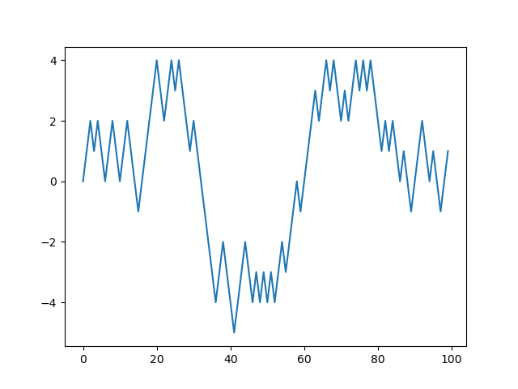

Моделирование случайного блуждания предоставляет иллюстрацию применения операций с массивами. Вначале рассмотрим случайное блуждание, начинающееся с \( 0 \) с шагами \( 1 \) и \( -1 \), происходящие с равной вероятностью.
Ниже представлен код сценария на чистом Python, который реализует
простое случайное блуждание в 1000 шагов и использует модуль random:
import random
position = 0
walk = [position]
steps = 1000
for i in range(100):
step = 1 if random.randint(0, 1) else -1
position += step
walk.append(position)
На рис. 3 графически представлены 100 первых значений одного случайного блуждания.
Рисунок 3: Простое случайное блуждание

Заметим, что walk — это просто накопленная сумма случайных шагов, а
она может быть вычислена с помощью метода массива. Таким образом,
можно воспользоваться модулем np.random для генерации 1000 бросаний
монеты за раз, установить соответствующие значения в \( 1 \) и \( -1 \) и
вычислить накопленную сумму:
nsteps = 1000
draws = np.random.randint(0, 2, size=nsteps)
steps = np.where(draws > 0, 1, -1)
Отсюда можно получить статистические данные, такие, например, как минимум и максимум:
In [180]: walk.min()
Out[180]: -9
In [181]: walk.max()
Out[181]: 60
Более сложная статистика — время первого «перехода», т.е. шаг, на
котором пусть достигает некоторого значения. Например, можно узнать,
сколько времени понадобилось случайному блужданию, чтобы пройти как
минимум 10 шагов от начала в любом направлении. Выражение
np.abs(walk) >= 10 даст булев массив, указывающий, где элемент
walk достиг или превысил значение \( 10 \). Но нам нужен индекс первого
элемента, равного \( 10 \) или \( -10 \). Мы можем получить это с помощью
функции argmax, которая вернет первый индекс максимального
значения в булевом массиве (True — максимальное значение):
In [182]: (np.abs(walk) >= 10).argmax()
Out[182]: 297
Обратите внимание, что использование argmax здесь не всегда
эффективно, потому что оно всегда выполняет полное сканирование
массива. В этом особом случае, когда есть значение True, мы знаем,
что это максимальное значение.